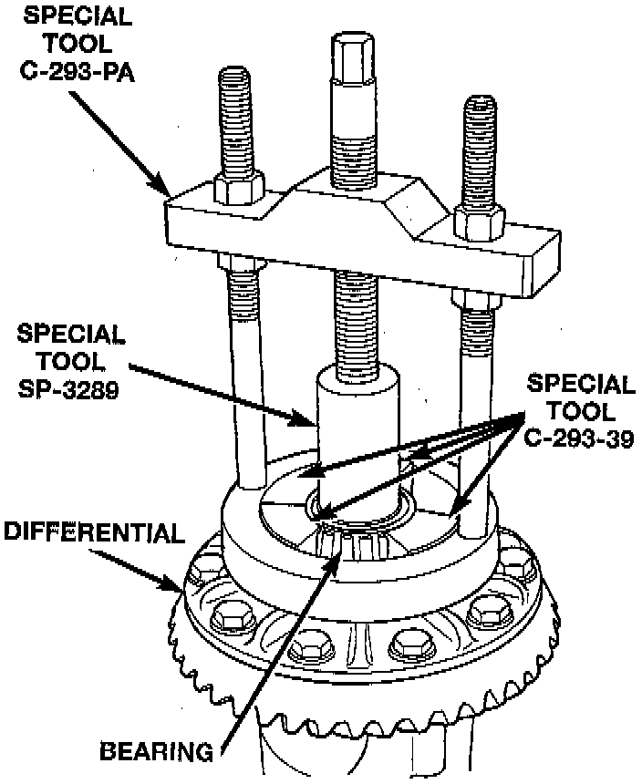
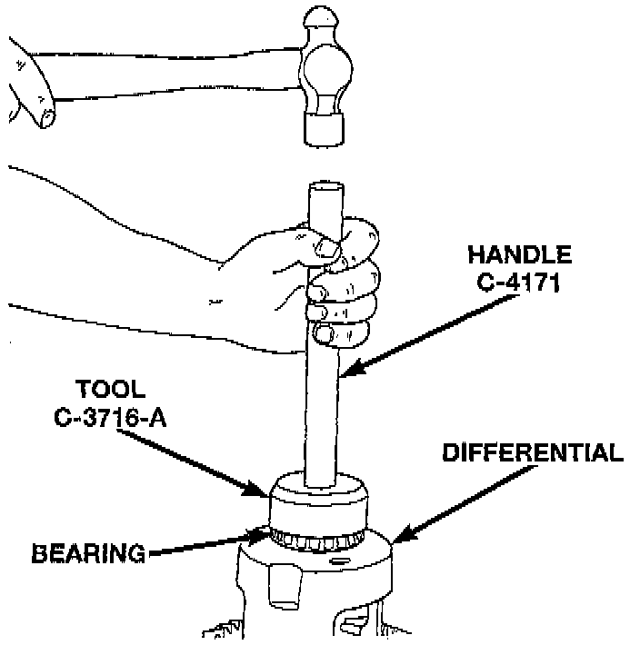

Rear Axle - 194RBI

REMOVAL
1. Remove differential from axle housing.
2. Remove the bearings from the differential case with Puller/Press C-293-PA, C-293-39 Blocks, and Plug SP-3289, or equivalents.

INSTALLATION
1. Using tool C-3716-A with handle C-4171, or equivalents, install differential side bearings.
2. Install differential in axle housing.